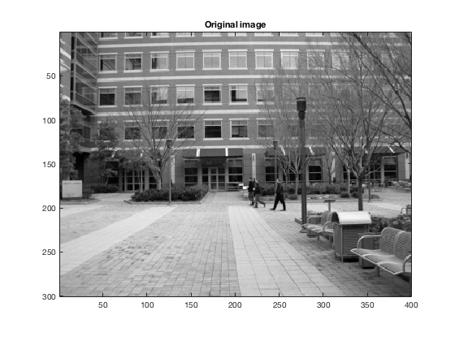
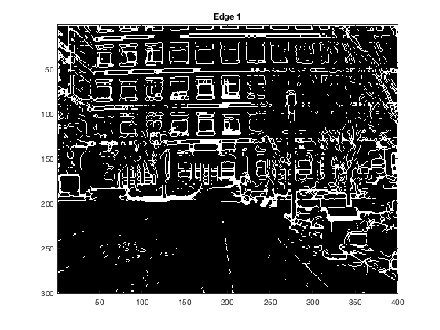
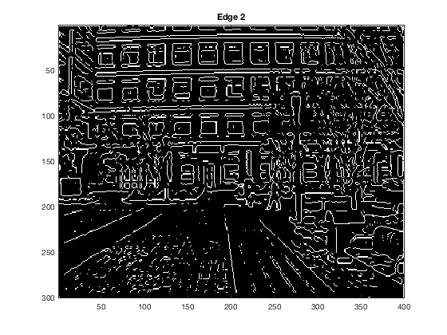

%=============================== plotEdges =============================== % % script plotEdges.m % % % Loads the edgethresh.mat Matlab file (make sure to have it in your % path or your current directory) and then thresholds the edge scores % to identify which parts of the image reflect edge-like structures. % %=============================== plotEdges =============================== % % Name: plotEdges.m % % Author: Patricio A. Vela, pvela@gatech.edu % % Created: 2014/01/13 % Modified: 2014/01/13 % %=============================== plotEdges =============================== %--[1] Load the edgethresh Matlab file. load('edgethresh.mat'); %--[2] Apply a threshold to the edge scores to get binary images. thresh1 = 105.0; thresh2 = 1.0; fprintf('Threshold for edge 1: %f\n', thresh1); fprintf('Threshold for edge 2: %f\n', thresh2); edge1new = edge1 > thresh1; edge2new = edge2 > thresh2; detect1 = edge1new ; detect2 = edge2new ; %--[3] Up to you to run or not. Thin out thick edge zones to give slim line. detect1 = bwmorph(detect1, 'thin'); detect2 = bwmorph(detect2, 'thin'); %--[4] Plot the image and also visualize the detected edge locations. figure(1); imagesc(I); colormap('gray'); axis image; title('Original image'); figure(2); imagesc(detect1); colormap('gray'); title('Edge 1'); figure(3); imagesc(detect2); colormap('gray'); title('Edge 2');
Threshold for edge 1: 105.000000 Threshold for edge 2: 1.000000  